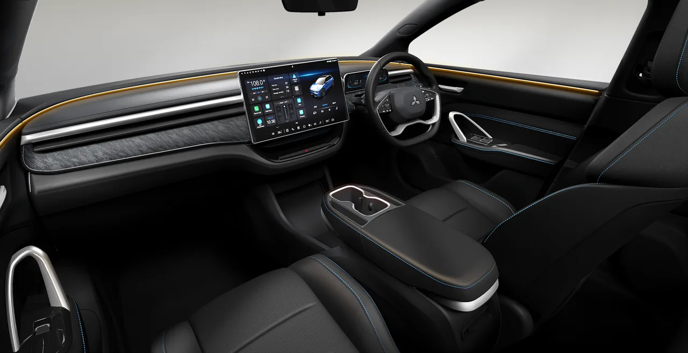

▲ 미쓰비시 ASX VR-e. 전면 그릴에 새겨진 'MITSUBISHI' 레터링과 삼각다이아몬드 로고가 이 차의 브랜드를 알려주지만, 실제 뿌리는 대만의 폭스트론이다
미쓰비시가 10년이 넘는 공백을 깨고 순수 전기차 'ASX VR-e'를 공개했습니다. 그런데 이 차의 뿌리를 따라가 보면 흥미로운 사실이 드러납니다. 아이폰 제조사로 유명한 폭스콘(홍하이정밀)과 대만 위룽자동차의 합작사 폭스트론(Foxtron)이 만든 '브리아(Bria)'를 기반으로 한 뱃지 엔지니어링 모델이라는 것입니다. 디자인은 이탈리아 명가 핀인파리나가 맡았습니다.
1. 아이폰 회사가 왜 자동차를 만드나
폭스콘은 2020년 대만 위룽자동차와 손잡고 폭스트론이라는 합작 전기차 제조사를 설립했습니다. 스마트폰 위탁생산으로 쌓은 대량생산 노하우를 자동차 산업에 적용하려는 시도입니다. 지난해(2025년) 5월, 폭스콘은 미쓰비시와 뱃지 엔지니어링 전기차 공급 계약을 맺었고, 그 첫 결과물이 바로 이번 ASX VR-e입니다. 원판이 되는 브리아는 대만 내수 시장에서 이미 판매 중이며, 미쓰비시는 여기에 자사의 트레이드마크인 삼각다이아몬드 로고와 전면 'MITSUBISHI' 레터링, 미세하게 다듬은 LED 라이트 시그니처를 더해 브랜드 정체성을 입혔습니다.

▲ ASX VR-e 실내. 핀인파리나가 디자인한 대시보드와 인포테인먼트 구성이 그대로 이어졌다
2. 407마력 듀얼모터, 스펙은 진짜다
뱃지만 바뀐 차라고 해서 성능까지 가벼운 것은 아닙니다. 기본형인 싱글모터(후륜구동) 버전은 232마력(171kW), 350Nm의 토크를 내며 정지 상태에서 시속 100km까지 6.8초에 도달합니다. NEDC 기준 주행거리는 516km(WLTP 환산 약 440km)입니다. 상위 트림인 듀얼모터(4륜구동) 버전은 무려 407마력(299kW), 700Nm의 토크로 0-100km/h를 3.9초에 끊습니다. 다만 출력이 커진 만큼 주행거리는 NEDC 기준 466km(WLTP 환산 약 400km)로 다소 줄어듭니다. 배터리는 57.7kWh 리튬인산철(LFP) 셀을 사용하며, 최대 134kW 급속충전을 지원해 10%에서 80%까지 30분 이내에 채울 수 있습니다.
| 구분 | 싱글모터(RWD) | 듀얼모터(AWD) |
|---|---|---|
| 출력 | 232마력(171kW) | 407마력(299kW) |
| 토크 | 350Nm | 700Nm |
| 0-100km/h | 6.8초 | 3.9초 |
| 주행거리(NEDC) | 516km | 466km |
| 배터리 | 57.7kWh LFP | |

▲ 아웃랜더 PHEV 후면(참고 이미지). 미쓰비시는 그동안 플러그인 하이브리드 중심으로 전동화 전략을 펴왔지만, ASX VR-e를 통해 순수 전기차 라인업으로도 보폭을 넓히고 있다
3. 왜 호주부터인가 — 콘·아토3를 정조준
ASX VR-e는 2026년 4분기 호주 시장을 시작으로 판매됩니다. 트림은 LS, 어스파이어, 익시드, GSR 4종으로 구성됩니다. 업계에서는 이 차가 현대 코나 일렉트릭과 BYD 아토3를 정조준한 경쟁 모델로 보고 있습니다. 두 모델 모두 준중형 전기 SUV 시장에서 강세를 보이는 만큼, 미쓰비시로서는 10년 만의 순수 전기차 복귀를 통해 이 세그먼트에서 존재감을 되찾으려는 전략으로 풀이됩니다.

▲ 미쓰비시 아웃랜더 PHEV(참고 이미지, ASX VR-e 실제 사진 아님). ASX VR-e는 미쓰비시가 10년 만에 선보이는 순수 전기차로, 기존 플러그인 하이브리드 위주였던 전동화 라인업에 새로운 축을 더한다
4. 정리 — 뱃지 엔지니어링에 대한 시각
완성차를 처음부터 개발하는 대신 검증된 플랫폼에 브랜드 정체성을 입히는 뱃지 엔지니어링은 업계에서 이미 흔한 전략입니다. 다만 아이폰 제조사가 만든 차체에 미쓰비시 로고가 붙는다는 조합은 소비자들에게 낯설게 느껴질 수 있습니다. 핵심은 결국 실제 완성도와 신뢰성입니다. 스펙만 보면 경쟁력은 충분해 보이는 만큼, 호주 출시 이후 실제 품질과 애프터서비스 대응이 어떤 평가를 받을지가 이 차의 성패를 가를 전망입니다.